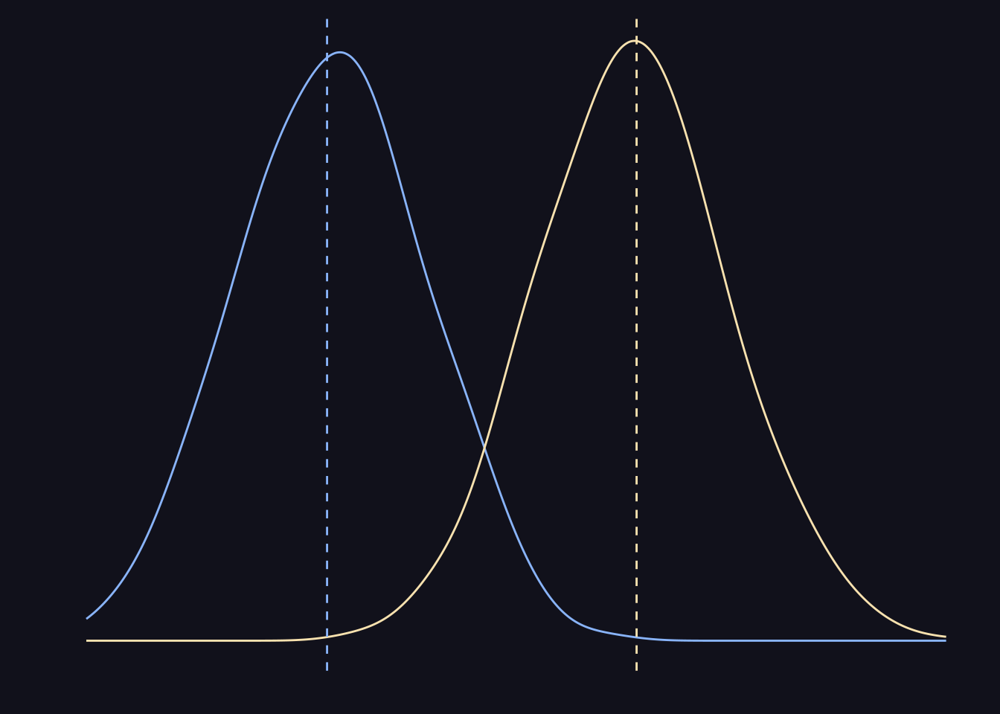
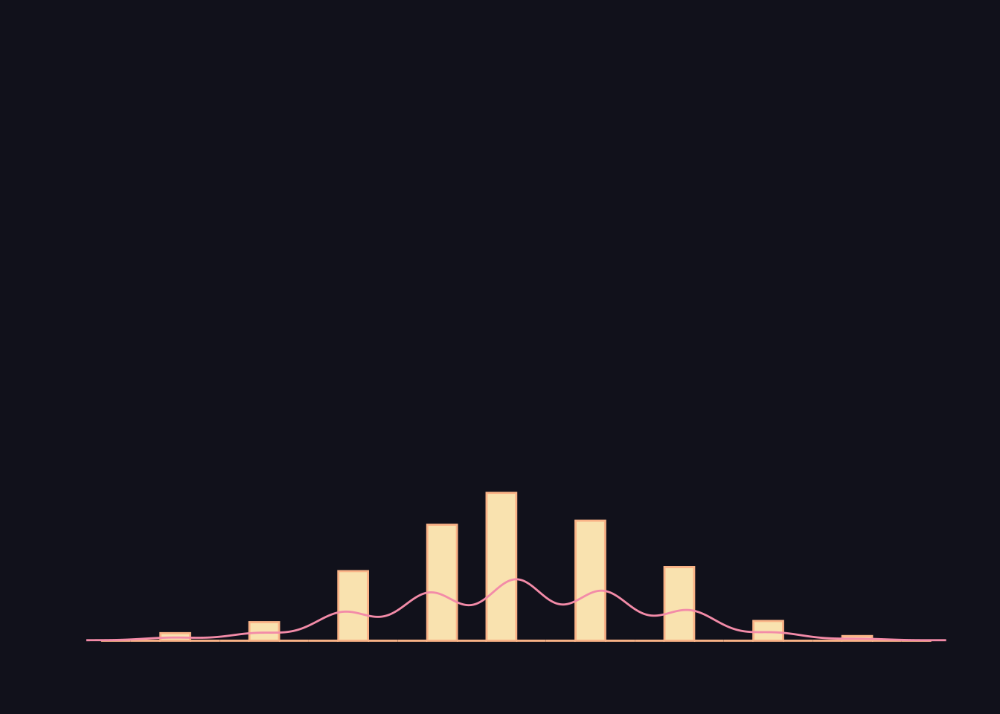
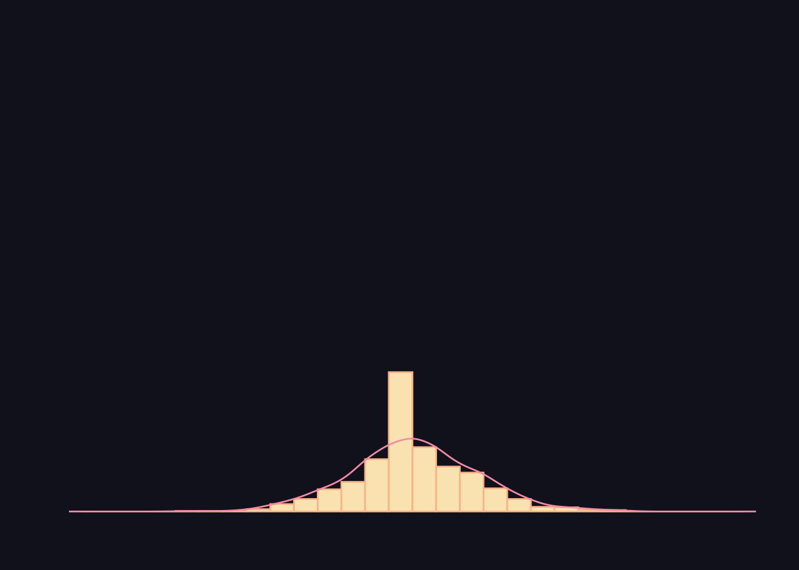
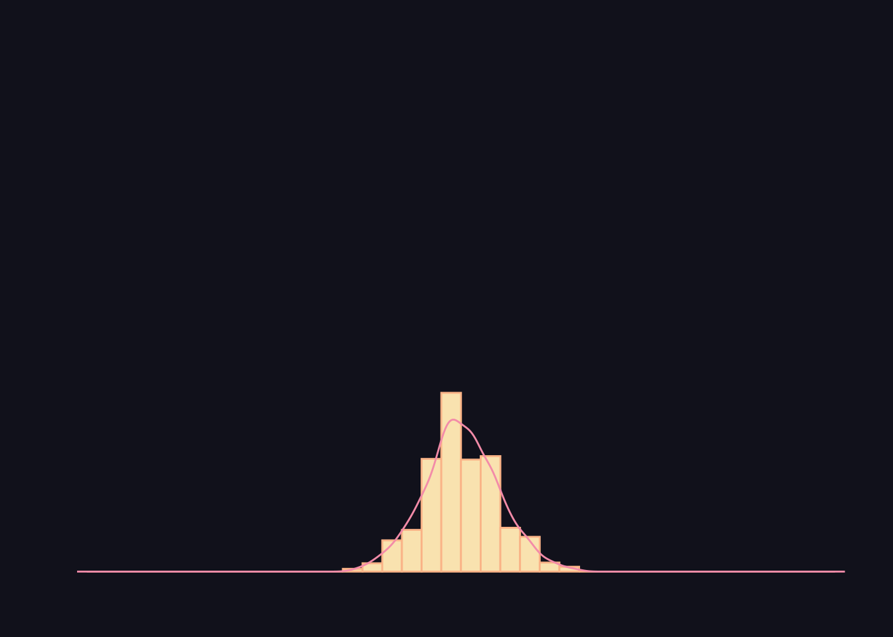
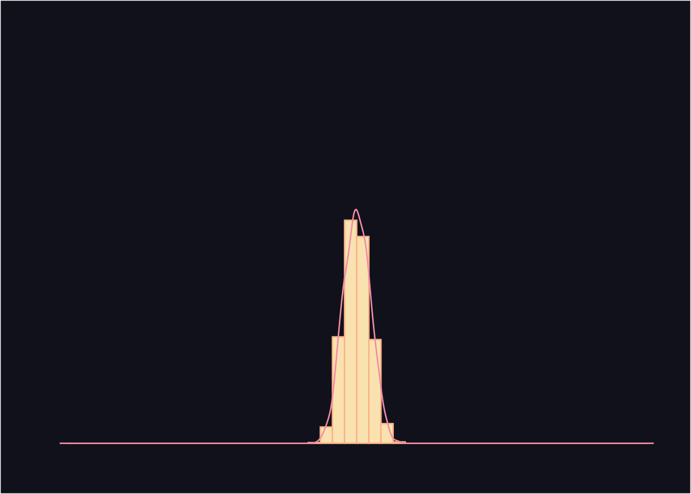

The Galton board
The Galton board was built in the 19th century to demonstrate the central limit theorem. Specifically, it showed that given sufficiently large sample sizes, a collection of sample means from the binomial distribution would approximate the normal distribution. The Galton board is not only very satisfying to watch, it also demonstrates one of the most important concepts for statistical inference.
Assume that you want to investigate the probability of getting a tail when flipping a coin. If you were to only flip the coin once, you would either get a head or tail and would conclude that it is either 100% or 0% probability that you get a tail. However, as you increase your number of throws you will eventually conclude that the probability of getting a tail is 50%.
If you instead imagine that you and a couple of friends independently toss a coin a small number of times each, it is unlikely that any of you will get a tail exactly 50% of the time. However, the distribution of your and your friends probabilities will be normally distributed, meaning that the mean of the sample means will approximately be the true mean.
If the sample sizes are large, the variance of the distribution is smaller, meaning that more samples are likely close to 50% probability.




While one conclusion from this is that a larger sample size provide more accurate estimates, it also means that we can test the probability of obtaining a sample mean by assuming a distribution.
In this example, we can assume that the probability of getting a tail is 50%. If we have only a collection of small samples, we would not be able to reject that a small deviation from the mean is random. Meanwhile, we will be able to reject that a small deviation is random if we have a large sample.
One way to think about this is in terms of differences in probability distributions. We imagine that in theory all samples should be distributed with a mean of 50%. We then use the distribution of the sample throws to test the probability that our sample mean is a part of a normal distribution with a mean of 50%.
The Galton board illustrates one of the most fundamental and important ideas in statistics in a beautiful way.